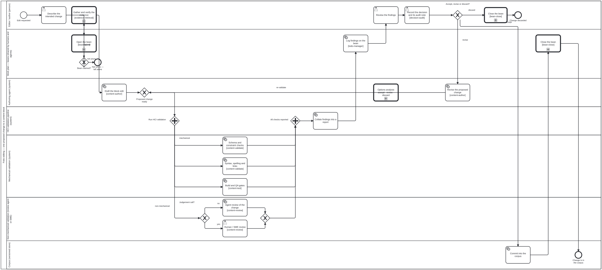

Generated from
folio-assistant-core/processes/content/editing-hci-validation.bpmnbygen-processes-viz.ts— do not edit here. All processes
Editing and HCI validation
Process_Editing · strict · 18 step(s)
What happens to one proposed change to one content block: drafted, validated mechanically and by review, shown to the editor, and committed to the corpus only if accepted. folio-assistant — editing a content block and its HCI validation gate.
Source of truth: this file. Open it in bpmn.io, Camunda Modeler, or any other
BPMN 2.0 tool. The SVG under docs/assets/img/workflows/ is generated from it
by bun run cat render:bpmn — never hand-edit the SVG.
The

How it connects
- Called by: Content lifecycle, Draft, review and publish
- Calls: Close the bean, Open the bean, Evidence for a recommendation, Options analysis
- Presented on: Publication workflow — Editing and the HCI validation gate
- Running instances: none recorded
Lanes — who acts
| lane | role | what it does here |
|---|---|---|
| Editor / author (person) | author | Every act the requesting party performs personally rather than through the agent lands here: stating the change, retrieving its evidence, and — once every validation path has reported — ruling on it. The gate sits at Task_ReviewFindings rather than earlier because a decision taken before the findings exist would not be a decision about the change that was actually built. |
| Work plan — beans (shared by humans and agents) | work-plan | Claims the edit as a bean before drafting starts, so a re-entry cannot silently duplicate the same request, carries the findings onto it before the editor ever sees them, and closes or reopens it against whether the change actually landed. That record is independent of the audit note Task_RecordDecision writes for the decision itself — one tracks the edit’s course, the other its outcome. |
| Authoring agent (system) | authoring-agent | Produces the proposed change and, once findings exist, weighs the options for it — accept, revise, discard — but stops short of choosing: Call_OptionsAnalysis records that the options were weighed, Task_RecordDecision in the editor’s lane records what was chosen, and collapsing the two would let the same party both analyse and decide. |
| HCI validation pipeline (system) | validation-pipeline | Forks validation into its four parallel paths and, once every one reports, collates mechanical results and review findings into a single report. It is the aggregation point rather than a checker itself — its only job is making sure none of the four is missing before the editor sees anything. |
| Mechanical validation (system) | validation-pipeline | Runs the three checks that need no judgement call — schema and constraints, syntax and link resolution, build and QA gates — in parallel with the non-mechanical review rather than gating on it, so a spelling error is never held up behind a pending SME review, or the reverse. |
| Non-mechanical validation (review agent or SME) | reviewer | Supplies the half of validation no checker can perform: whether the change says what the editor meant. Gateway_ReviewerKind escalates from agent review to a human SME specifically when the judgement needed turns clinical or scientific rather than editorial. |
| Corpus (versioned store) | corpus | Receives the write only after Gateway_EditorDecision resolves to accept. The one activity here is irreversible in a way nothing upstream is, which is why it is subject to the commit-hygiene requirement and reachable from no path except acceptance. |
Steps
Every one of the 18 step(s) is documented.
| step | lane | skill / sub-process | what it does |
|---|---|---|---|
Describe the intended changeTask_DescribeChange | Editor / author (person) | — | The editor states the change in natural language; no content has moved yet. |
Open the beanTask_ClaimBean | Work plan — beans (shared by humans and agents) | calls Open the beanbean-coordination | Process_BeanOpen: check before you create, find out whose the bean is, and claim it — or leave it alone when it is someone else’s. The one place a claim is drawn (bean m8gz, owner 2026-10-24); the gateway after this reads which end it reached. |
Gather and verify the evidenceCallActivity_Evidence | Editor / author (person) | calls Evidence for a recommendation | Before anything is drafted: the author reads the guidance ALREADY in this content, frames the question as PICO, retrieves candidates across the three evidence classes, and has each candidate’s authority resolved against its publisher’s own API. A recommendation reaches the drafting step with its evidence attached, or with the gap recorded. This step has nothing to do for content that carries no recommendations – a mathematics folio has none – and is skipped there rather than satisfied vacuously. |
Draft the block editTask_DraftEdit | Authoring agent (system) | content-authorbefore-after-preview | The authoring agent produces a PROPOSED change. Nothing is written to the corpus yet. For a rendered change it also produces the before/after preview (skill before-after-preview) here, before Gateway_ValidationFork, so the preview exists when the parallel review starts. |
Schema and constraint checksTask_SchemaValidate | Mechanical validation (system) | content-validate | Block schema, label prefixes, required fields, constraint rules. |
Syntax, spelling and linksTask_SyntaxSpell | Mechanical validation (system) | content-validate | Syntax, spelling, cross-references, citation and link resolution. |
Build and QA gatesTask_BuildGates | Mechanical validation (system) | content-test | Lean build and proof status, LaTeX compile, FHIR/SUSHI validation, QA axes. |
Agent review of the changeTask_AgentReview | Non-mechanical validation (review agent or SME) | content-review | A review agent judges what no checker can: accuracy, voice, exposition, whether the change says what the editor meant. |
Human / SME reviewTask_SmeReview | Non-mechanical validation (review agent or SME) | content-review | Escalated to a human reviewer or subject-matter expert when the change turns on clinical or scientific judgement. A rendered change reaches the reviewer with its before/after preview (skill before-after-preview). |
Collate findings into a reportTask_CollateFindings | HCI validation pipeline (system) | content-validatecontent-validatecontent-validate | Mechanical results and review findings are merged into one report against the proposed change. |
Log findings on the beanTask_LogFindings | Work plan — beans (shared by humans and agents) | todo-manager | Findings are appended to the bean, so the next agent or human sees what is outstanding. |
Review the findingsTask_ReviewFindings | Editor / author (person) | decision-auditdecision-auditdecision-audit | THE GATE: the editor sees every finding BEFORE anything reaches the corpus. |
Options analysis accept · revise · discardCall_OptionsAnalysis | Authoring agent (system) | calls Options analysis | On the edge out of Task_ReviewFindings and before Task_RecordDecision: the findings are the evidence, so the options can only be weighed once they exist, and after Task_RecordDecision the decision is already written down.NOT between Gateway_EditorDecision and Task_RecordDecision, which is the pair the work-plan named — in this diagram those run the OTHER WAY ROUND. Flow_21b goes Task_RecordDecision -> Gateway_EditorDecision, so the gateway reads a decision that has already been recorded, and interposing there would analyse options after the choice was made.In the Agent lane, and this diagram makes the reason sharp. Task_RecordDecision is a userTask in Lane_Editor that already names decision-audit, and Process_OptionsAnalysis ends with its own decision-audit note. Those are two different acts — the subprocess records that the options were WEIGHED, the editor records WHAT WAS CHOSEN — and putting the analysis in the editor’s lane would collapse them, making the same party both analyse and decide. The subprocess’s own documentation refuses that: it produces options and a recommendation, and the authorisation belongs to the calling step.CallActivity_Evidence sits in Lane_Editor instead, and that is not an inconsistency: the author performs the evidence retrieval, whereas here the point is that the analyst is not the decider.On the trigger: A_Frame opens the subprocess on opening-brief’s trigger — irreversibility and surprise — and leaving there is a correct outcome. A spelling fix that reached Task_ReviewFindings with one mechanical finding exits immediately; a revise-or-discard on a block other content depends on does not. |
Record the decision and its audit noteTask_RecordDecision | Editor / author (person) | decision-audit | A decision is an act ABOUT the findings, not a finding. Record the outcome, every finding it weighed, every finding it overrules — and an audit note saying why it was made, or why a finding in it was left. Each note cites corpus evidence: a witness, another finding, a QA report, a block, a file range. An overruled mechanical finding stays on the record; a gate whose findings vanish when somebody disagrees with them cannot be audited. An agent may assemble the citations and is recorded as proposed_by; the author is whoever decided. |
Revise the proposed changeTask_ReviseEdit | Authoring agent (system) | content-authorbefore-after-preview | The editor chose revise: rework the proposed change against the findings the editor reviewed, then send it back through validation as a new proposal. The before/after preview is refreshed with it (skill before-after-preview). |
Commit into the corpusTask_Commit | Corpus (versioned store) | corpus-commit-contract | Only now does the change become corpus content, together with its QA sidecars. Subject to the commit-hygiene requirement. |
Close the beanTask_ResolveBean | Work plan — beans (shared by humans and agents) | calls Close the beantodo-manager | Process_BeanClose: end the bean in a state that says why — complete and archive it, scrap it with its reasons and archive it, or record the blocker and hand it back. The one place resolve and archive are drawn (bean m8gz, owner 2026-10-24); placed straight before the end so the engine’s resolve sees nothing left but the archive step. |
Close the beanCall_BeanClose | Editor / author (person) | calls Close the beantodo-manager | Process_BeanClose: end the bean in a state that says why — complete and archive it, scrap it with its reasons and archive it, or record the blocker and hand it back. The one place resolve and archive are drawn (bean m8gz, owner 2026-10-24); placed straight before the end so the engine’s resolve sees nothing left but the archive step. |
Decisions
Every one of the 3 decision(s) is documented.
| decision | what decides it | branches |
|---|---|---|
Judgement call?Gateway_ReviewerKind | Does this change need a judgement call? no goes to agent review; yes goes to a human or SME. The question is about the change, not about who is available. | no → Agent review of the change yes → Human / SME review |
Accept, revise or discard?Gateway_EditorDecision | The editor’s recorded decision, with its audit note. revise reworks the proposed change; discard ends with the change dropped; accept commits it into the corpus. | revise → Revise the proposed change discard → Close the bean accept → Commit into the corpus |
Bean claimed?GW_BeanYours | Reads which end Process_BeanOpen reached. claimed: the bean is in progress and this process works it. not yours: a sibling session or a human holds it, nothing was written to it, and this process stops here rather than work a bean it does not own (bean-coordination). | claimed → Gather and verify the evidence not yours → Not yours — left alone |